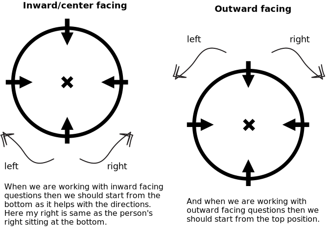

Unit 1
Introduction to Reasoning
Reasoning is a fundamental skill in critical thinking and problem-solving.
It involves the ability to think logically and draw conclusions based on available information.
Reasoning allows us to analyze situations, evaluate arguments, and make informed decisions.
Types of Reasoning:
- Deductive Reasoning: Drawing specific conclusions from general premises.
- Inductive Reasoning: Forming general conclusions from specific observations.
- Abductive Reasoning: Making the best possible explanation based on available
evidence.
Importance of Reasoning:
- Enhances problem-solving abilities.
- Supports effective communication and persuasive arguments.
- Aids in evaluating information and identifying biases.
- Useful in various fields, including science, law, and business.
Developing Reasoning Skills:
- Practice critical thinking exercises.
- Analyze complex situations and break them down logically.
- Engage in debates and discussions to refine your reasoning abilities.
- Read diverse materials to broaden your perspective.
Conclusion:
Reasoning is a vital skill that empowers individuals to think critically, solve problems, and make
well-informed decisions. It's a cornerstone of success in various aspects of life and career.
Basic Concepts of Arrangement Based Questions
Arrangement based questions are a common type of problem-solving questions in various competitive exams
and assessments. These questions test your ability to organize and arrange elements according to
specific conditions.
Deterministic Arrangement:
In deterministic arrangement, the positions of elements are fixed based on given conditions. You need
to
arrange elements in a specific order following the provided rules.
Types of deterministic arrangements:
- Linear Arrangement: Elements are arranged in a straight line.
- Vertical Arrangement: Elements are stacked vertically.
- Circular Arrangement: Elements are arranged in a circular pattern.
- Rectangular Arrangement: Elements are placed in rows and columns.
Non-deterministic Arrangement:
In non-deterministic arrangement, the positions of elements are not fixed, and multiple arrangements
are
possible. You need to explore all possible arrangements based on given conditions.
Practice Tips:
- Read the conditions carefully and identify any fixed positions or constraints.
- Draw diagrams or tables to visualize the arrangements.
- Start with the fixed elements and use process of elimination to determine positions of other
elements.
- Practice regularly to improve your speed and accuracy.
Example:
Let's consider a linear arrangement with six people: A, B, C, D, E, and F. Conditions:
- A is to the left of B.
- C is between A and D.
- F is to the right of E.
Solving step by step:
- A _ _ D _ _
- A _ C D _ _
- A _ C D _ F
- A B C D _ F
Circular arrangement
Direction sense
- Centre facing
- Outward facing

Types of statements
- A is 2nd to the left of B and 3rd to the right of C.
- A is 2nd to the left of B who is 3rd to the right to C.
- If two sentences are connected via conjunction (and, but, while) then that means we are refering
to the first
person.
- If there is pronoun (who, which) then it refers to second person.
Q- Study the following information carefully and answer the questions given below:
Eight friends A, B, C, D, E, F, G and H are sitting around a circle facing the centre. E is
third to the left of G who is to the immediate right of B who is third to the left of A. H is second
to the right of F who is not an immediate neighbour of E. D is not an immediate neighbour of B.
- Who is second to the right of B?
- Which of the following pairs has the first person to the immediate left of second person?
GB
AF
CE
HD
- Which of the following is the correct position of B with respect to D?
Second to the right
Second to the left
Third to the right
Third to the left
None of these
- Who sits between A and D?
- What is E's position with respect to C?